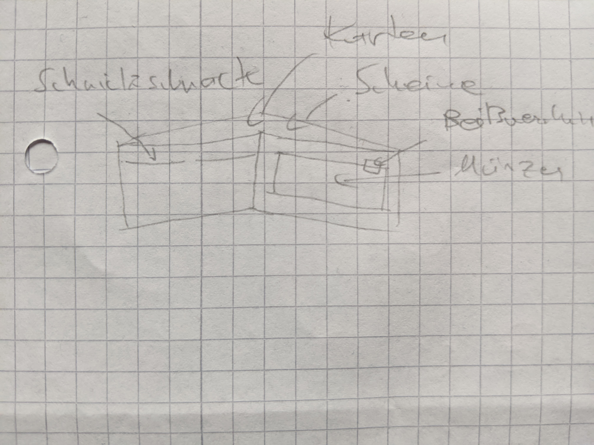
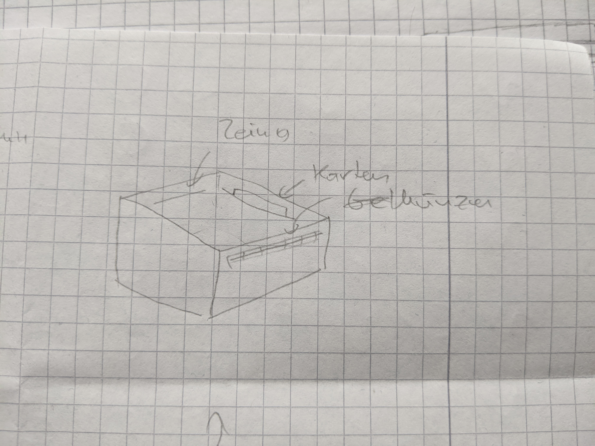
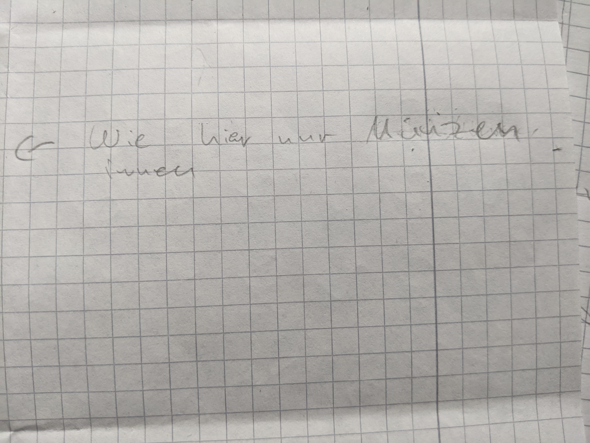
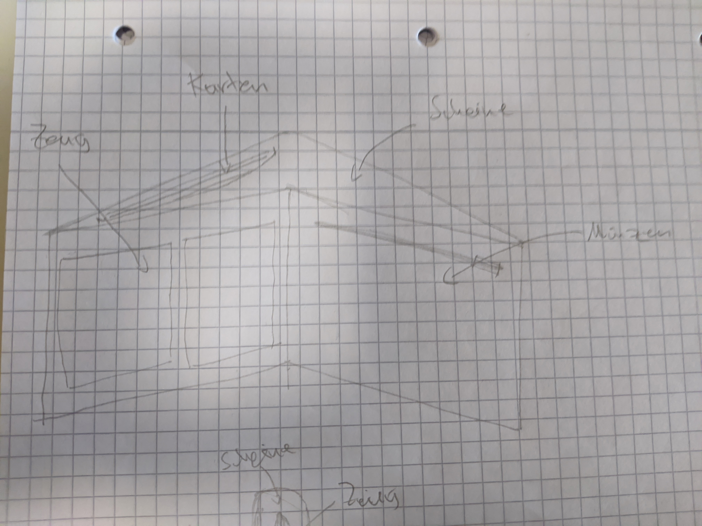
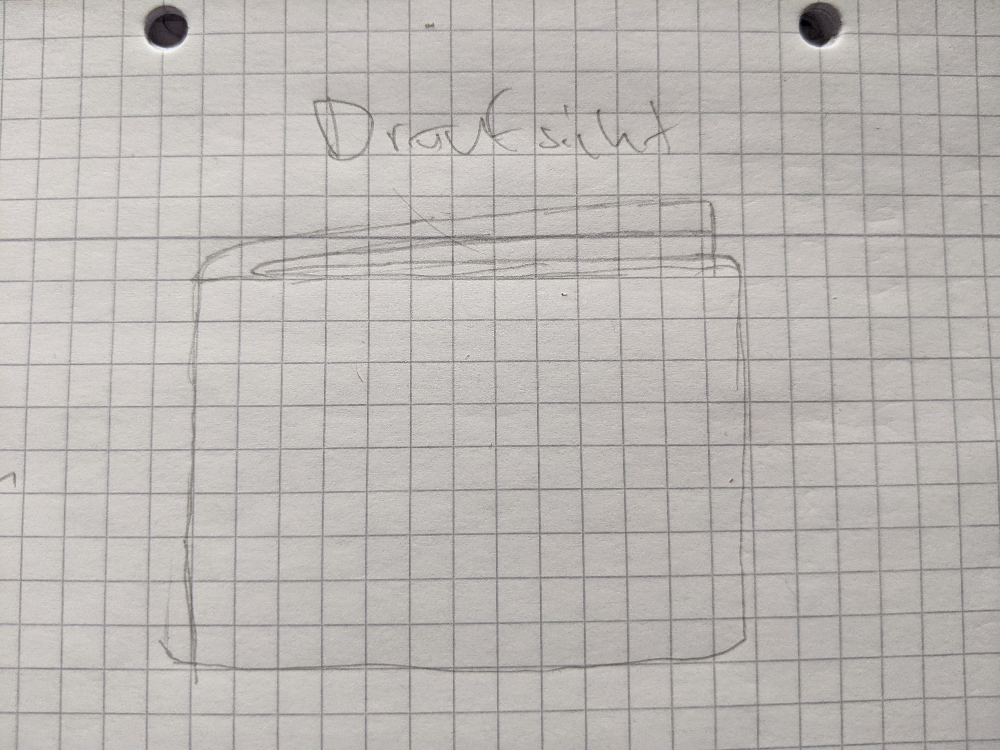
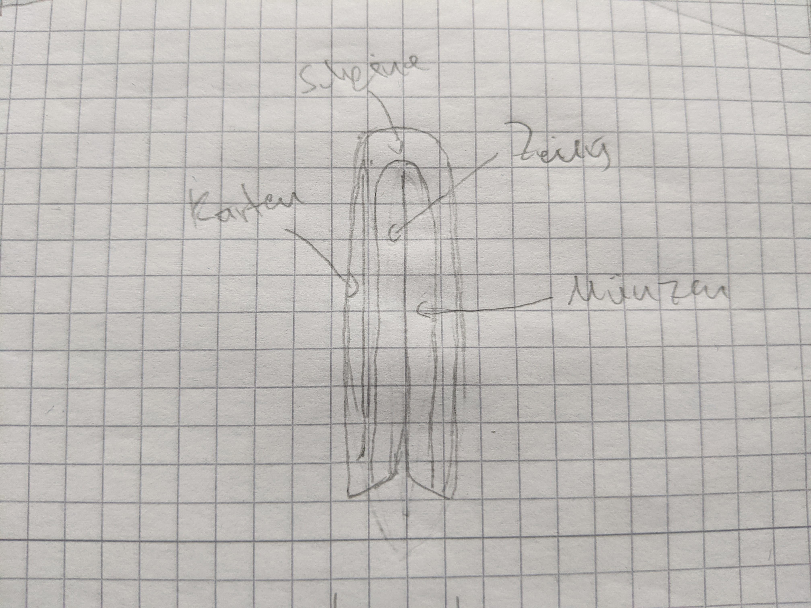
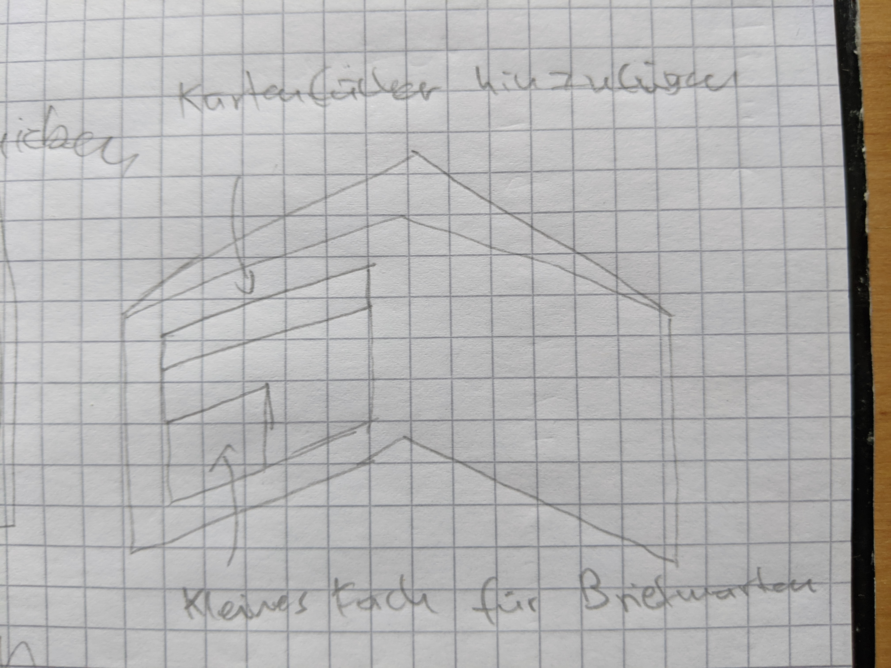
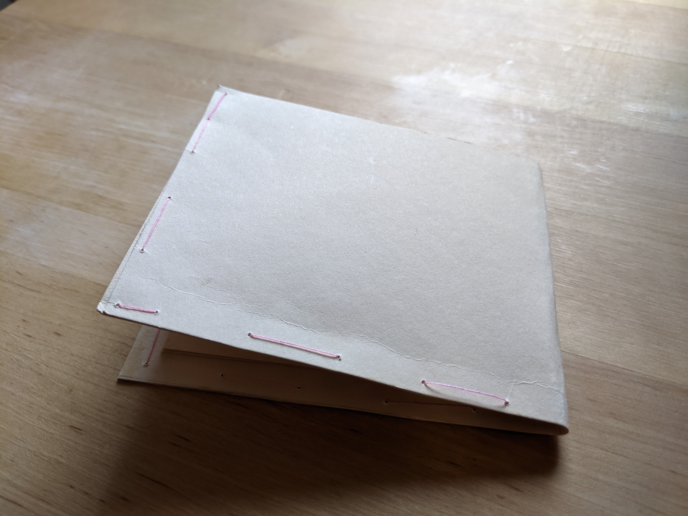
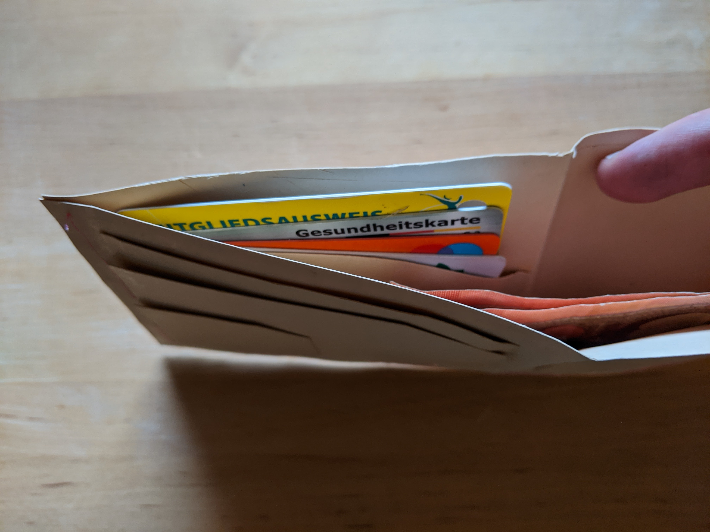

Aussehen des Geldbeutels?
Klassicher Herrengeldbeutel, Münzfach, Scheinfach, Doppelkartenfach, Braun.
Wo bewahrst du den Geldbeutel auf?
Rechte Hintertasche. Bei Langen Sitzen rausholen und ablegen.
Bist du zufrieden mit der Größe des Geldbeutels?
Ein bisschen kleiner. Ausklappbereich ist überfllüssig.
Zahlst du häufiger mit Karten oder Bar?
Bar wenn möglich.
Bist du zufrieden mit dem Münzfach des Geldbeutels?
Münzenfach wird viel benutzt. Münzfach zu voll. Münzen werden in Einkaufstasche geworfen weil Münzfach zu
voll.
Wünscht sich Reißverschluss am Münzfach.
Bist du zufrieden mit der Farbe deines Geldbeutels?
Ist zufrieden. Braun, Schwarz, Blau kommt in Frage. Meterial: Leder.
Stört dich sonst noch etwas an deinem Geldbeutel bzw. hast du Änderungswünsche?
Briefmarken werden im Geldbeutel aufbewahrt. Zurzeit im Münzfach -> kleines extra Fach für diese wäre
gut.
Benutzt Kartenslots kaum. Karten liegen zusammen mit Scheinen im Scheinfach
Möglichst kompakte Geldbeutel wäre mir lieber.
Sichtfenster im Ausklappbereich wird nicht genutzt.
Geldbeutel mit Schutz gegen NFC-Scanner.
Define
Möglichst kleiner Geldbeutel mit wenigen variabel nutzbaren Fächern.
Ich als Nutzer brauche eine kleinen Geldbeutel ohne Sichtfach und dedizierte Kartenplätze, ein Platz für
kleinigkeiten wie Briefmarken wäre nicht schlecht und ein gut verschließbares Münzfach.
Ideate



Prototype



Test
Zeug/Briefmarkenfach noch kleiner machen, ein paar Kartenslots für wichtige Karten, Reißverschluss interessant.

Prototype Iteration

ZugeklapptMünzfach mit Reißverschluss

Platz für extra Karten